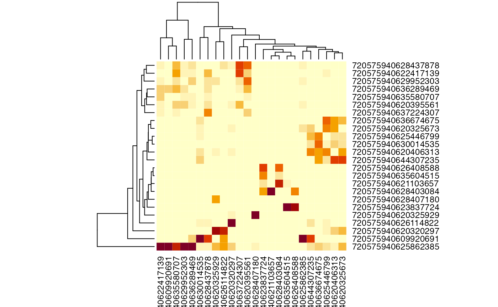
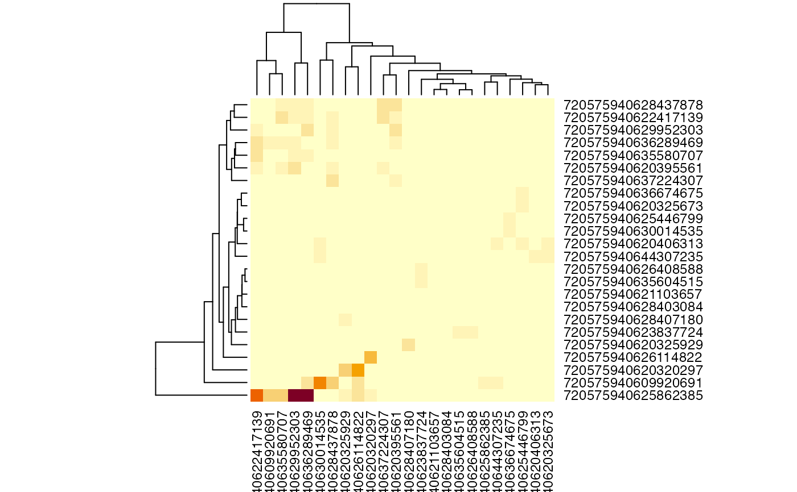
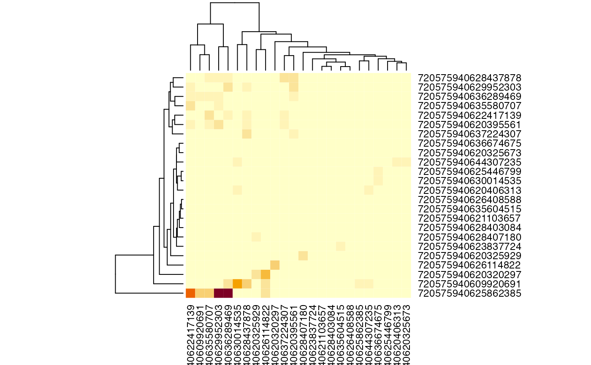

R/autosyn.R
flywire_adjacency_matrix.RdGet an adjacency matrix for the predicted synaptic connectivity
within a set of specific flywire bodies. You can specify a single pool of
ids or separate input (upstream) and output (downstream) ids. In contrast
to flywire_partner_summary this only returns connections
amongst a defined set of ids rather than all possible partners.
flywire_adjacency_matrix(
rootids = NULL,
inputids = NULL,
outputids = NULL,
sparse = FALSE,
remove_autapses = TRUE,
cleft.threshold = 0,
Verbose = interactive(),
method = c("auto", "spine", "sqlite")
)flywire root ids for the bodies to fetch all by all connectivity information.
identifiers for input and output bodies (use as an
alternative to rootids)
Whether to return a sparse matrix (default FALSE)
whether to remove autapses (self-connections); most of these are erroneous.
A threshold for the cleft score calculated by Buhmann et al 2019 (default 0, we have used 30-100 to increase specificity)
Logical indication whether to print status messages during the
query (default T when interactive, F otherwise).
Whether to use a local SQLite database or remote spine service
for synapse data. The default auto uses a local database when
available (45GB but faster).
A matrix with named rows of inputs and columns of outputs. The matrix
will be square when rootids is specified but may otherwise be rectangular.
Defaults to a regular (dense) matrix unless sparse=TRUE.
This function is currently much more efficient when local SQLite tables are available; in their absence queries to the remote spine server are possible but currently transfer more data than necessary. Future work could allow spine queries than consider both pre and postsynaptic supervoxel ids as part of the query.
You should also be careful about how many neurons you attempt to query. The
function is not designed to handle queries involving hundreds of neurons
with the spine method being especially sensitive to overloading. If this is
your intention, you might be better off using
flywire_partners or flywire_partner_summary
both of which fetch data in chunks and then manually filtering down to your
ensemble of interest.
It is always important to give careful thought to data normalisation when analysing these connectivity matrices. In general we feel that normalising by the total input onto each target cell makes the most sense, since this approximates the effectiveness of input in making the target cell fire. However if you do not include all inputs onto the target cells then even this normalisation has difficulties and it may be better to use raw counts.
Other automatic-synapses:
flywire_neurons_add_synapses(),
flywire_ntplot(),
flywire_ntpred(),
flywire_partners()
# \donttest{
u="https://ngl.flywire.ai/?json_url=https://globalv1.flywire-daf.com/nglstate/5392055178100736"
sm=flywire_adjacency_matrix(u)
# scaled to give proportion of inputs onto each target cell
heatmap(sm, scale='col')

# scale='none' => raw counts
# nb note use of assignment and keep.dendro so we can use dendrogram later
h=heatmap(sm, scale='none', keep.dendro = TRUE)

# same but with the cleft threshold applied
smc=flywire_adjacency_matrix(u, cleft.threshold = 30)
# note the reuse of the earlier dendrogram to return col order for comparison
heatmap(smc, scale='none', Colv=h$Colv)

# just a single upstream neuron
sm2=flywire_adjacency_matrix(inputids="720575940625862385", outputids=u)
# }